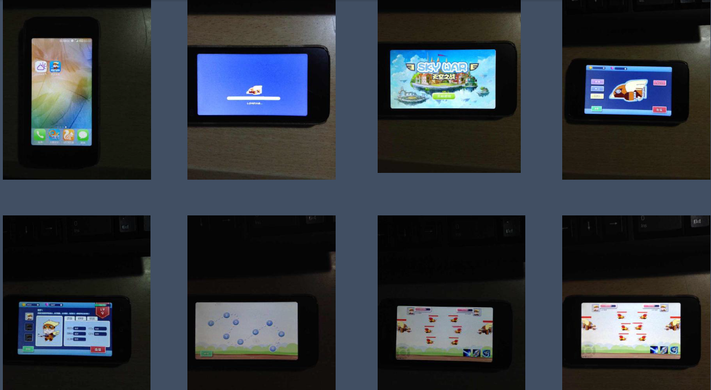
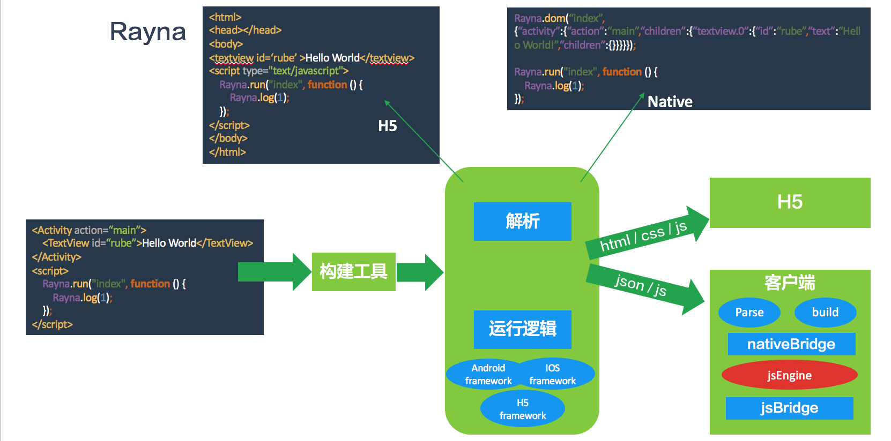

董一炜
Rube
前端工程师
我对各种技术充满强烈好奇
我对问题有着自己独特思考
热情地交流，静静地思考
快乐地编码，全心地投入
这是我梦想的工作方式~
重庆理工大学本科
软件工程专业应届
重庆ACM⼆等奖
校甲等奖学金
能力
⼩学学习 pascal，中学参加 NOIP 并获奖，⼤学带领技术团队。
⽆线端开发：
概述
⼩学学习 pascal，中学参加 NOIP 并获奖，⼤学带领技术团队。
⼤学期间参与了⼀些项⺫的开发，积累了⼀定的团队协作和项⺫管理经验，深
⼊技术细节并针对⾃⼰的项⺫需求开发了⼀些技术框架，积累了⼀些架构⽅⾯的知识和软件性能
调优的经验。有扎实的编程能⼒和逻辑思维能⼒，编码⻛格规范严谨，追求⾼
效简洁。有清晰易懂⽂档的编写能⼒。
技术
⽆线端开发：
- 熟悉 Android SDK/NDK 和 Android 开发环境
- 能利⽤ HTML5/CSS3/Javascript 进⾏ Hybrid App 的开发
- 对类 React-Native 的无线方案有自己的思考和实验项目
Web前端开发：
-
能够使用 HTML / CSS 进行前端布局及动画实现
-
了解 ECMAScript 相关标准，熟悉 DOM/BOM 操作， 了解 WebGL / Web Workers / WebSocket / Web Components 等相关技术
-
了解 React / AngularJS / Backbone / Vue / jQuery / Bootstrap 等前端框架和库及部分原理，有 React 实践经验
- 有使用基于 CMD/AMD 的模块加载方案经验，并了解其原理
- 能使用 grunt/gulp 改进工作流，有插件编写经验
Web后端开发：
-
能利用 Java，PHP，.net 进行原生和基于框架的服务端开发，有分布式开发经历
-
能利用 Nodejs(原生API/Express/Koa), fibjs 进行后端开发，
中间件开发和测试编写，
了解异步 I/O 及基于事件驱动的原理
- 了解网络原理，
了解 HTTP、 TCP/IP、 WebSocket 等协议
能使用 MongoDB / MySQL 数据库，Redis 缓存等，了解反向代理，负载均衡等
综合及其他：
- 有一定项目管理能力
- 能够使用 git / svn 进行版本控制
- 多年 Linux 用户，熟悉常用命令及脚本控制
- 了解 Java 多线程编程有一定游戏开发经验
经历
CFC
- 大二开始负责重理工 CFC 团队，为学弟学妹提供工作学习环境，指导项目开发帮助成长
- 团队官网 https://crazyforcode.org
- 自建 hadoop 小集群
- 自建 oj 平台 http://coj.cqut.edu.cn
- 自建 git 仓库 https://git.crazyforcode.org
linuxstory
- http://www.linuxstory.org 业余担任编辑，介绍 github 上开源项目
阿里巴巴 B2B-1688 平台前端
- 前端研发实习
- 参与无线 1688 客户端的 UI 改造
- 参与交易平台前后端开发，改造，升级
主要项目
fpm
- 类似 npm 的 fibjs 包管理工具
- 采用 fibjs 开发，实现了包分析、上传、下载、安装、搜索等功能
- 建立命令行客户端，服务端和 fpmjs.org
- 客户端 https://github.com/Hi-Rube/fpm
- 服务端及 website https://github.com/Hi-Rube/fpm-server
sushiwasabi 餐饮平台
- 是⻄班⽛ Sushiwasabi 寿司店的在线订餐平台，在萨拉⼽萨、毕尔巴鄂和巴萨罗那开有分店
- website，wap，android，ios 端都已上线
- 初期采用自开发 PHP 框架构建，之后换用 ThinkPHP，现对移动端接口利用 Nodejs 进行了改造。
伴旅
- 伴旅大学生旅游平台http://dev.webapp.tripwy.com
- php + 阿里云 RDS + BAE提供服务支持，一台阿里云 ECS 支持开发环境与自建开发平台
- spa 采用 react + reflux + react-router 开发，seajs 加载模块
孢子社区 react-native 客户端
- github 地址 https://github.com/Hi-Rube/baoz-ReactNative
- 出于对孢子社区的喜爱和对 react-native 的研究
Sky War
- 采用 libgdx 游戏引擎纯 java 开发的一款手游实验项目
- 学校创新实验项目 
rayna-native
- 个人探索性项目正在开发与摸索中https://github.com/Hi-Rube/rayna-native
- 主要是对 Hybrid App 开发的思考与探索 
更多
- 个人写的模块等详见 Github